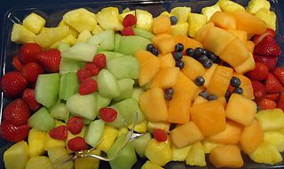

fruit, In its strict botanical sense, the fleshy or dry ripened ovary (enlarged portion of the pistil) of a flowering plant, enclosing the seed or seeds. Apricots, bananas, grapes, bean pods, corn grains, tomatoes, cucumbers, and acorns are all technically fruits. Popularly, the term is restricted to the ripened ovaries that are sweet and either succulent or pulpy. The principal botanical purpose of the fruit is to protect and spread the seed. There are two broad categories of fruit: fleshy and dry. Fleshy fruits include berries, such as tomatoes, oranges, and blueberries, which consist entirely of succulent tissue; single-seeded drupes, including cherries and plums; aggregate fruits, including blackberries and raspberries, which form from a single flower with many pistils, each of which develops into fruitlets; and multiple fruits, such as pineapples and mulberries, which develop from the mature ovaries of an entire inflorescence. Dry fruits include the legumes, cereal grains, capsules, and nuts. Culinary fruits are important sources of dietary fiber and vitamins (especially vitamin C). They can be eaten fresh; processed into juices, jams, and jellies; or preserved by dehydration, canning, fermentation, and pickling.
Karnataka state implements several schemes for the benefit of farmers. Farmers undertake different agriculture and agriculture related activities like growing Agriculture crops, Horticulture crops, Sericulture, Dairy, Poultry, Fishery etc. Each of this activity requires specialised knowledge and experience. Therefore, the state has established specialised and specific department to assist farmers in carrying out farming activities effectively and efficiently. While establishment of exclusive departments brings focused approach for development of each of these activities, farmers need to approach different departments for availing any type of assistance and benefits. It is common practice that all the departments seek documents from the farmers for providing benefits under any scheme. Farmers end up submitting same set of documents to different departments every year. Sometimes they will be required to submit one set of documents for every scheme in same department.
A well organized and scrutinized farmer database will avoid farmers from running pillar to post for availing benefits. Besides it would helps the departments in overcoming the aforesaid issues. DPAR e Governance department in association with NIC has developed a software application called Farmer Registration &Unified Beneficiary Information System – FRUITS.
These fruits develop from the monocarpellary ovary or multicarpellary syncarpous ovary. Only one fruit is formed by the gynoecium. Simple fruits are of two types
These are the fruits that develop from the multicarpellary apocarpous ovary. It becomes a fruitlet because each carpel is separated from one another in the apocarpous ovary. These fruits make a bunch of fruitlets which is known as etaerio.
All composite fruits are false fruits. In these fruits, generally, there are many ovaries and other floral parts combining to form the fruit. These are of two types:
| True Fruits | False Fruits | Parthenocarpic Fruits |
|---|---|---|
| Develops from a mature superior ovary. | Develops from parts of the flower other than the ovary. | Fruits develop without fertilisation of the egg cell. |
| Eg: Peas, Grapes, Mango, Coconut | Eg : In apple and pear the fleshy edible part of the fruit develops from the swollen thalamus. | Eg: seedless varieties of banana, watermelon and grapes. |